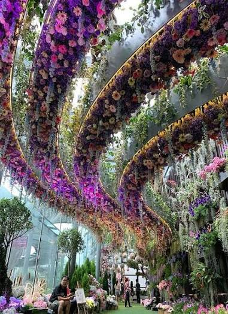

Por que viajar o Mundo
Como uma pessoa que lê desde jovem eu já conheci muitas culturas e já estive em muitos lugares. Mas apenas na minha imaginação.
Eu nunca de fato sai do país, então tenho um desejo profundo de visitar pessoalmente diversas partes do mundo, visitar lugares históricos, maravilhas do mundo, conhecer a cultura, a culinária e apreciar com meus próprios olhos belissimas paisagens que existem mundo a fora.
Algumas Viagens do Sonhos
China:
A Cidade Antiga de Furong é uma vila histórica com mais de 2.000 anos, situada na província de Hunan, na China. Ela é famosa por sua espetacular cachoeira central, arquitetura tradicional da etnia Tujia em palafitas de madeira e por se iluminar intensamente à noite.
Japão:

O Monte Fuji é a montanha mais alta do Japão, com 3.776 metros de altitude, servindo como o símbolo cultural e espiritual mais famoso do país. Localizado na ilha de Honshu, na fronteira entre as províncias de Shizuoka e Yamanashi, ele fica situado a cerca de 100 quilômetros a oeste da região metropolitana de Tóquio. Trata-se de um estratovulcão ativo que está em estado de dormência, já que sua última erupção registrada ocorreu no ano de 1707.
Singapura:

O Jardim Botânico de Singapura (Singapore Botanic Gardens) é um oásis tropical de 82 hectares localizado no coração de Singapura. Fundado em 1859, ele detém o prestigiado título de ser o único jardim botânico tropical do mundo declarado Patrimônio Mundial da UNESCO
Com mais de 10.000 espécies de plantas, o local combina perfeitamente a preservação histórica colonial britânica com a pesquisa científica moderna e o lazer.